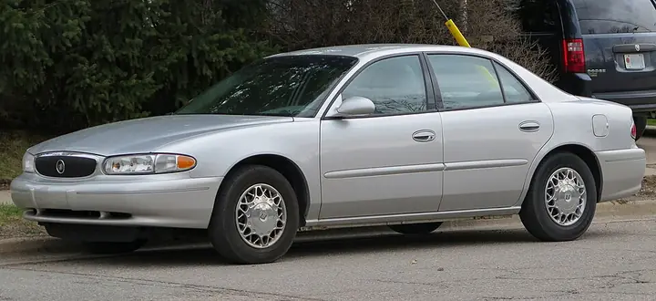
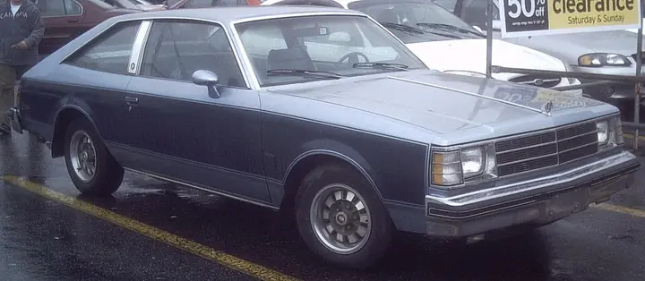
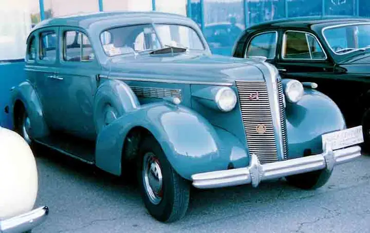

Buick Century
Sixth generation (1997–2005) · 1996–2004
Abstract
This generation of the Buick Century is a mid-size car, built 1996–October 2004 in Canada: Oshawa, Ontario (GM Canada Oshawa Car Assembly), China: Shanghai, Shanghai GM. Body styles: 4-door sedan. Layout: Transverse front-engine, front-wheel drive. Designed by Wayne Cherry (chief: 1993), Wayne Kady (1993).


1Specifications
| Production | 1996–October 20041998–2000 (China) |
|---|---|
| Model years | 1997–2005 |
| Assembly | Canada: Oshawa, Ontario (GM Canada Oshawa Car Assembly)China: Shanghai, Shanghai GM |
| Designer | Wayne Cherry (chief: 1993)Wayne Kady (1993) |
| Class | Mid-size car |
| Body style | 4-door sedan |
| Layout | Transverse front-engine, front-wheel drive |
| Platform | W-body 2nd Gen |
| Engine | China2.0 L L34 I42.5 L LB8 V63.0 L LW9 V6North America3.1 L L82/LG8 V6 |
| Transmission | 5-speed manual (2.0 L only)4-speed 4T60-E automatic4-speed 4T65-E automatic |
| Wheelbase | 109.0 in |
| Length | 194.6 in |
| Width | 72.7 in |
| Height | 56.6 in |
| Also called | Buick New Century (China) |
| Related | Buick RegalOldsmobile IntriguePontiac Grand PrixChevrolet ImpalaChevrolet Monte Carlo |
2Previous generations





.jpg){kind=link}


3Generation by generation
Length −1% from the first to the last
1936–1942 19365,004 mm
1954–1958 19545,240 mm
1973–1977 19735,395 mm
1978–1981 19784,978 mm
1982–1996 19824,803 mm
1997–2005 19964,943 mm